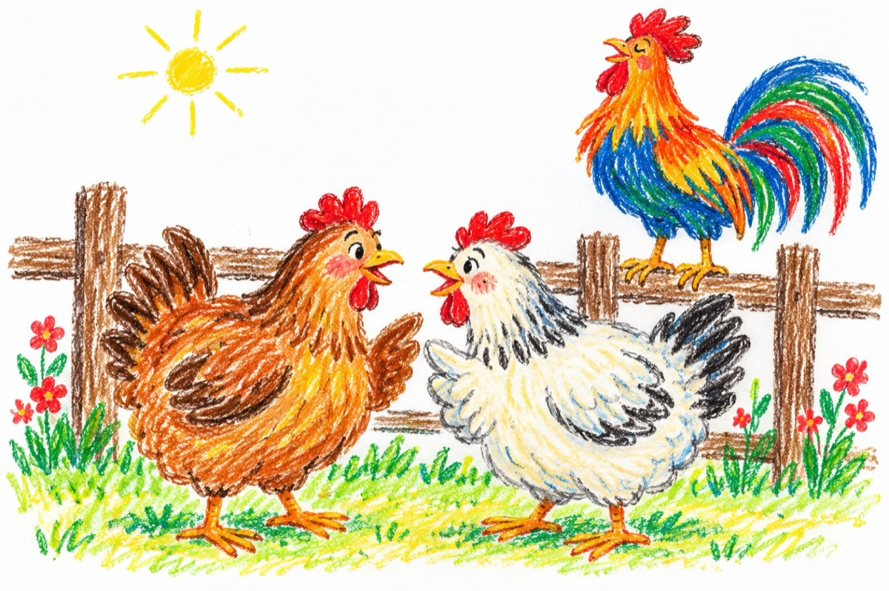

Bârfitoarele
Auzi, draga mea surată
Mă întreb eu la ce bun
Când toată lumea-i culcată
El cântă ca un nebun.
Și când merge prin ogradă
Ține capul, sus, în nori,
Vrând găinile să-i vadă
Penele-n zeci de culori.
Cică-i mare pintenat
Și-are creasta des bătută
Altul ca el nu-i în sat,
De pe garduri te salută.
Și de lume nici că-i pasă
Că-l bârfește o vecină
Zicând că în coștereță
Nu el cântă, ci-o găină!
Iar de găini se ocupă
Un cocoș sărac în pene,
Cheamă puii de mănâncă
Și de nimeni nu se teme.
Are grijă de găini
Luându-și hrana pe din două
Le apără de străini
Chiar cuibarele cu ouă...
Haide, nu cotcodăciți!
Strig-un pui de cocoșel,
Toată noaptea nu dormiți
Și-i vorbiți pe toți la fel!
Nu v-ajunge cât bârfiți
Plescăiți din cioc mereu
Ia ședeți de mai clociți
Sau ați dat deja de greu!?...
Vasile Groza